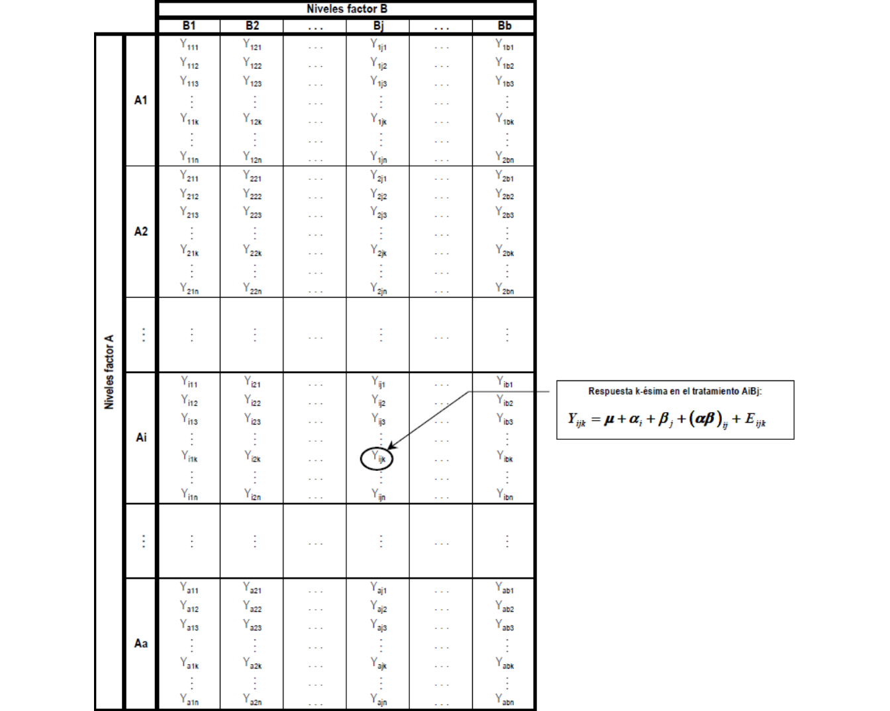
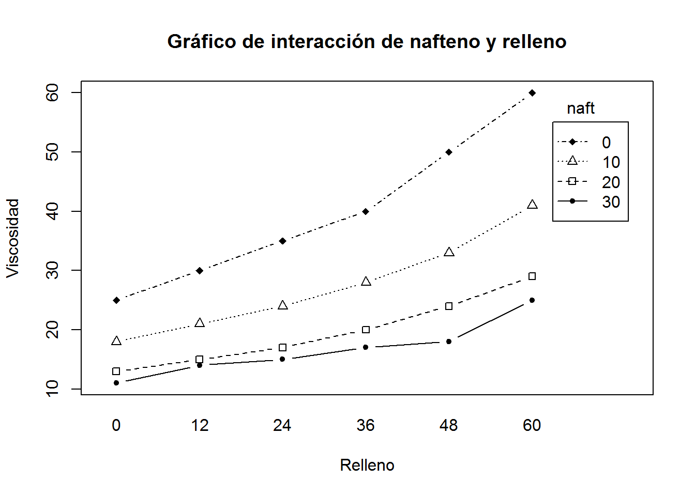
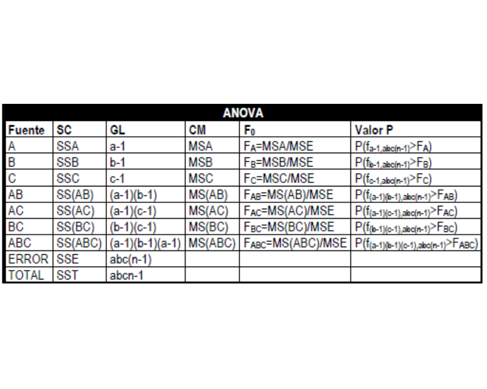
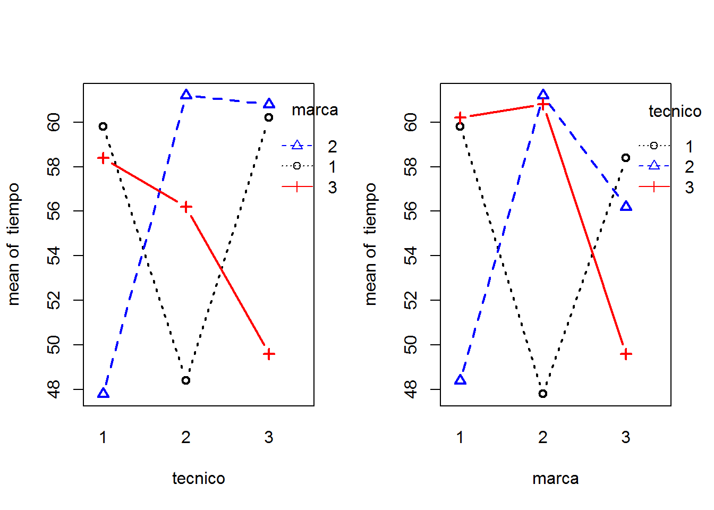
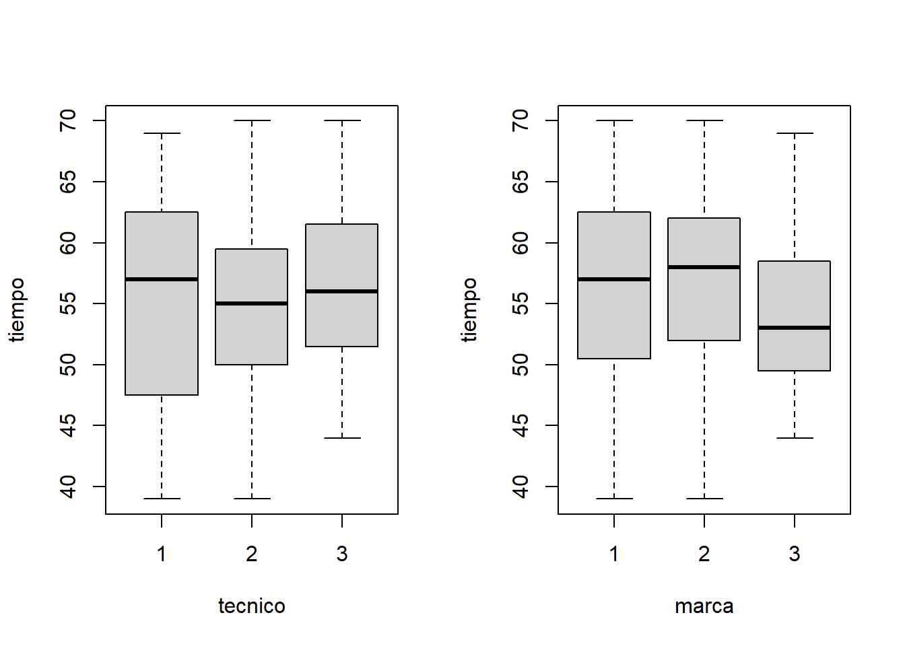
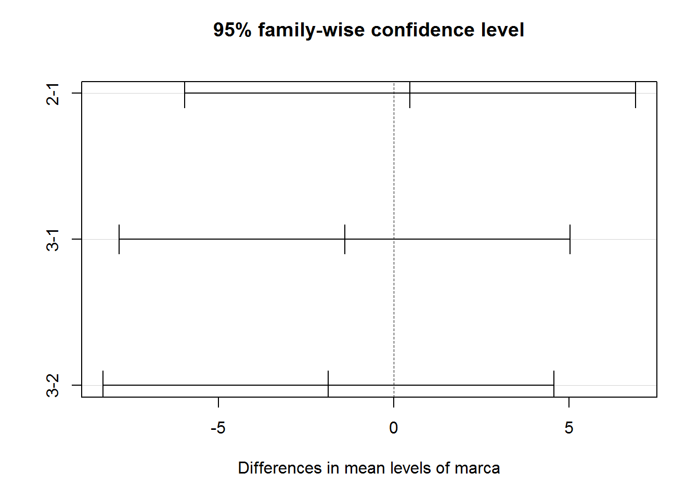
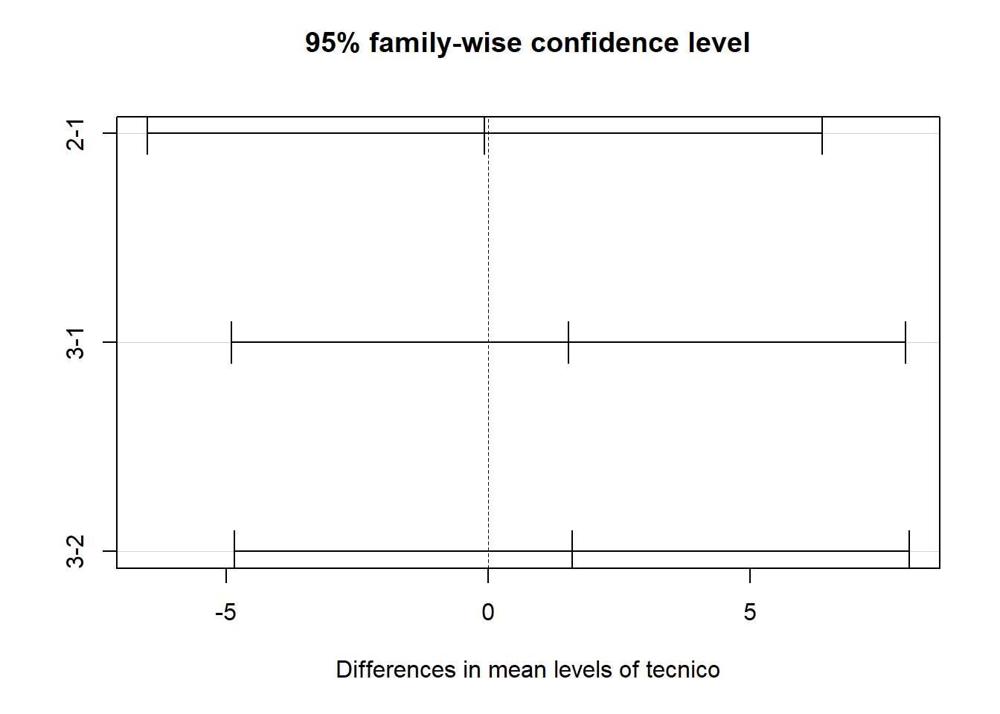
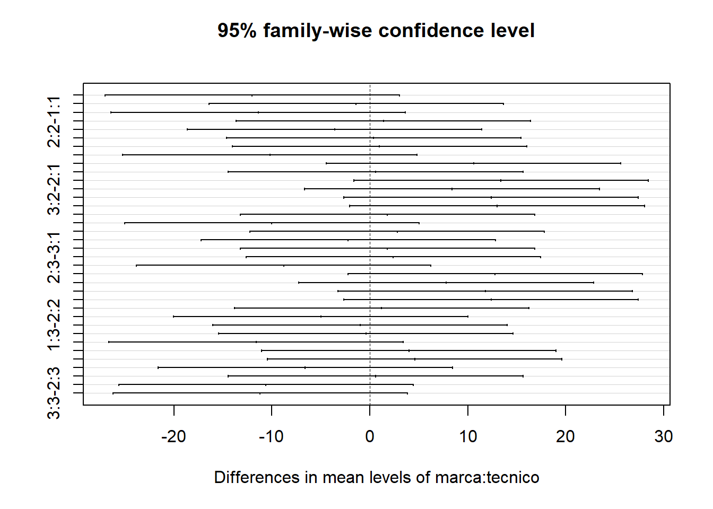
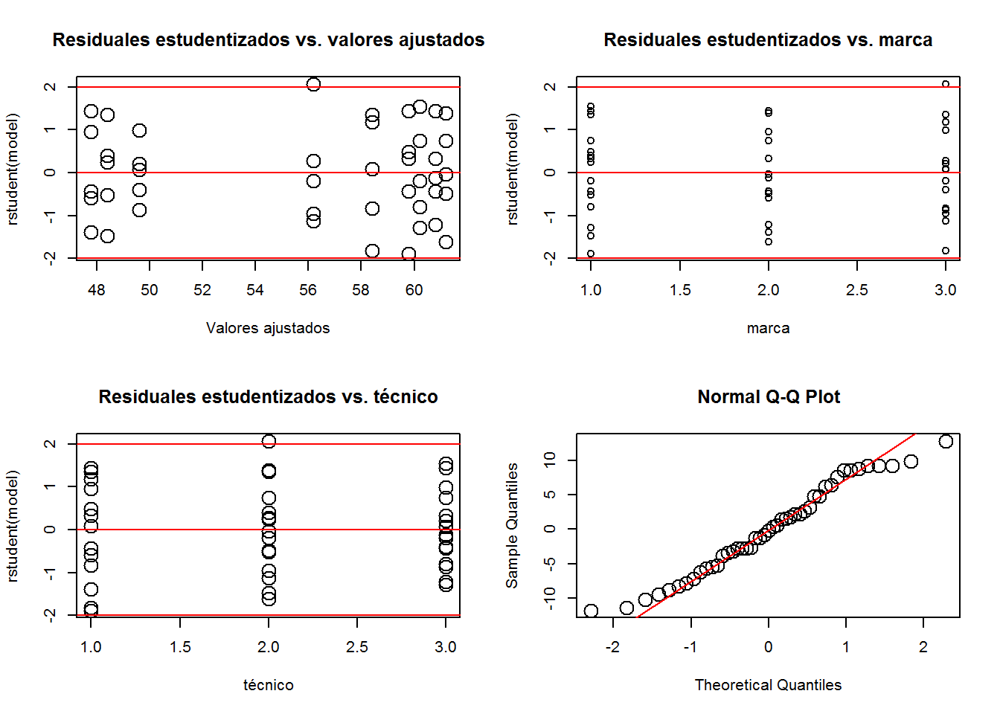
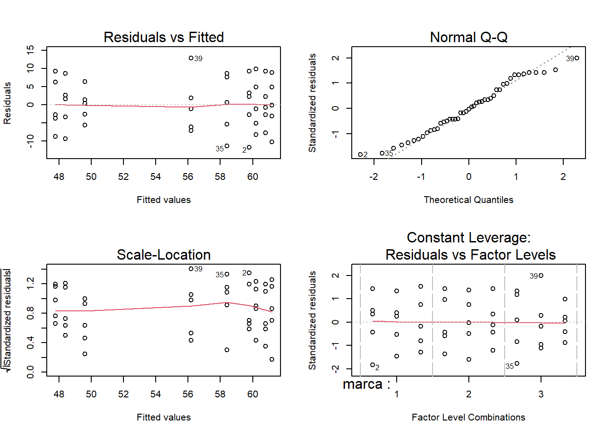

Los experimentos factoriales son aquellos en los cuales el interés se centra en el estudio de los efectos de las combinaciones de dos o más factores sobre una variable respuesta.
En la práctica cuando el número de factores a considerar es mayor que 3, se suelen utilizar experimentos 2k (k factores con dos niveles cada uno), experimentos 3k (k factores con tres niveles cada uno), experimentos factoriales fraccionados, etc.
Las unidades experimentales se considerarán homogéneas respecto a las características individuales que pudieran afectar las respuestas a los tratamientos aplicados.
##Diseño con 2 factores
En el caso de dos factores A y B, El número de niveles del factor A lo denotaremos por a y el número de niveles de B lo denotaremos por b.
Definición Llamaremos tratamiento a cada combinación posible entre los niveles de los factores. Así, para el caso de dos factores, se tendrá un total de ab posibles tratamientos. Por ejemplo, sea a=3 y b=2:
| Niveles factor B | ||
|---|---|---|
| Niveles factor A | B1 | B2 |
| A1 | A1B1 | A1B2 |
| A2 | A2B1 | A2B2 |
| A3 | A3B1 | A3B2 |
Cada combinación AiBj con i=1,2,3 y j=1,2 define un tratamiento, entonces hay 6 posibles tratamientos correspondientes a las entradas de esta tabla.
1. De efectos fijos: Los a niveles del factor A como los b niveles del factor B son definidos a propósito por el investigador.
2. De efectos aleatorios: Los a niveles del factor A como los b niveles del factor B son elegidos aleatoriamente dentro de una población de posibles niveles, respectivamente.
3. De efectos mixtos: Uno de los dos factores es de efectos fijos en tanto que el otro es de efectos aleatorios.
En cualquiera de los anteriores casos se debe considerar el fenómeno conocido como interacción de los factores, los modelos deben iniciarse considerando la existencia de interacción y luego a través de la evidencia muestral, determinar si dicha interacción es o no significativa. Sólo si en cada tratamiento se toman réplicas (n>1 observaciones por tratamiento), será posible estimar y evaluar la interacción entre los factores.
A cada tratamiento se asignan en forma completamente aleatorizada, n unidades experimentales obteniéndose por tanto de cada tratamiento n observaciones de la variable respuesta. En total habrán N=abn observaciones de la variable respuesta. La tabla de entrada de datos del experimento será como se presenta en la siguiente figura

Se postula el modelo con interacción, para la k-ésima respuesta en el tratamiento AiBj (nivel i del factor A combinado con nivel j del factor B), que aparece a continuación:
\[\Large Y_{ijk}=\mu+\alpha_i+\beta_j+(\alpha\beta)_{ij}+\varepsilon_{ijk}\] Donde:
\(\Large Y_{ijk}\) Variable respuesta
\(\Large \mu\) Media global de la respuesta
\(\Large \alpha_i\) Efecto fijo del i-ésimo nivel del factor A sobre la respuesta promedio global.
\(\Large \beta_j\) Efecto fijo del j-ésimo niveles del factor B sobre la respuesta promedio global.
\(\Large \alpha_i \beta_j\) Efecto fijo de la interacción de los factores A y B en sus niveles i y j, respectivamente, sobre la respuesta promedio global.
\(\Large \varepsilon_{ijk}\) error aleatorio
Supuestos y restricciones
\[\Large \varepsilon_{ij} \sim N(0,\sigma^2)\] para todo i, j, k
\[\Large \sum_{i=1}^a\alpha_i=0\] \[\Large \sum_{j=1}^b\beta_j=0\]
\[\Large \sum_{i=1}^a(\alpha\beta)_{ij}=0\]
\[\Large \sum_{j=1}^b(\alpha\beta)_{ij}=0\]
Parámetros del modelo
Efectos de tratamientos \[\Large \tau_{ij}=\alpha_i+\beta_j+(\alpha\beta)_{ij}\] Representa el efecto del tratamiento AiBj sobre la respuesta promedio global.
Note que:
\[\Large \sum_{i=1}^a\sum_{j=1}^b\tau_{ij}=0\] Medias de tratamientos:
\(\Large \mu_{ij}=\mu+\tau_{ij}\) de donde \(\Large \tau_{ij}=\mu_{ij}-\mu\)$
Media del nivel i del factor A
\(\Large \mu_{i\bullet}=\mu+\alpha_i\) de donde \(\Large \alpha_{i}=\mu_{i\bullet}-\mu\). Note que \(\Large \mu_{i\bullet}=\frac{1}{b}\sum_{j=1}^b \mu_{ij}\)
Media del nivel j del factor B
\(\Large \mu_{\bullet j}=\mu+\beta_j\) de donde \(\Large \beta_{j}=\mu_{\bullet j}-\mu\). Note que \(\Large \mu_{\bullet j}=\frac{1}{a}\sum_{i=1}^a \mu_{ij}\)
Media global \[\Large \mu_{\bullet }=\frac{1}{ab}\sum_{i=1}^a \sum_{j=1}^b \mu_{ij}\] Efectos de interacción
\[\Large (\alpha\beta)_{ij}=\mu_{ij}-\mu_{i\bullet}-\mu_{\bullet j}+\mu \]
##Interacción
La interacción de dos factores significa que las diferencias entre las medias de tratamientos según los niveles de un factor varían (bien sea en dimensión y/o signo) de nivel a nivel del otro factor.
Para analizar los cambios de la respuesta promedio de cada tratamiento, se usan los gráficos de perfiles de medias o Gráficos de interacción en los cuales se presentan las medias de tratamiento en cada uno de los niveles de uno de los factores fijando los niveles del otro factor ubicado en el eje horizontal.
Diagnóstico de la presencia de interacción
Muestralmente podemos establecer la presencia de interacción mediante una de las siguientes formas equivalentes:
Si se observa que los gráficos de perfiles de medias muestrales de tratamientos no son paralelos.
Si la diferencia entre las respuestas medias para cualesquiera dos niveles del factor A no es la misma para todos los niveles de B.
Si la diferencia entre las respuestas medias para cualesquiera dos niveles del factor B no es la misma para todos los niveles de A.
Si las medias de tratamientos no son todas iguales a la suma de la media global más los respectivos efectos principales de los factores A y B
Encubrimiento o enmascaramiento de efectos principales:
Los efectos \(\Large \alpha_i\) y \(\Large \beta_j\) constituyen los efectos principales del modelo. Cuando los efectos de interacción son significativos, pueden encubrir o enmascarar a los efectos principales de uno o de ambos factores, esto significa que en las pruebas F asociadas a la significancia simultánea de los efectos del respectivo factor, no se rechaza la hipótesis nula, es decir, se concluye que el factor A, o el B o ambos, no son significativos, cuando ya se ha probado que estos interactúan significativamente.
Pero tenga en cuenta que, en presencia de interacción significativa, no se puede concluir que alguno o ambos factores son no significativos a pesar de que el respectivo test de significancia individual para cada factor arroje como resultado la no significancia, porque tal evento es consecuencia de un encubrimiento debido a la interacción.
##EJEMPLO
La siguiente tabla muestra los resultados de un experimento factorial llevado a cabo por Derringer (1974) para determinar el efecto de los compuestos de elastómero sobre la viscosidad del sílice a 100 C. Los compuestos de elastómero estudiados fueron aceite de nafteno, en 4 niveles, y contenido de relleno (phr), en 6 niveles
| Nafteno (phr) | 0 | 12 | 24 | 36 | 48 | 60 |
|---|---|---|---|---|---|---|
| 0 | 25 | 30 | 35 | 40 | 50 | 60 |
| 10 | 18 | 21 | 24 | 28 | 33 | 41 |
| 20 | 13 | 15 | 17 | 20 | 24 | 29 |
| 30 | 11 | 14 | 15 | 17 | 18 | 25 |
## The following objects are masked _by_ .GlobalEnv:
##
## fill1, naft, resp## The following objects are masked from d1 (pos = 9):
##
## fill1, naft, resp## The following objects are masked from d1 (pos = 16):
##
## fill1, naft, resp## The following objects are masked from d1 (pos = 23):
##
## fill1, naft, resp## The following objects are masked from d1 (pos = 30):
##
## fill1, naft, resp## The following objects are masked from d1 (pos = 37):
##
## fill1, naft, resp## The following objects are masked from d1 (pos = 43):
##
## fill1, naft, resp## The following objects are masked from d1 (pos = 49):
##
## fill1, naft, resp## The following objects are masked from d1 (pos = 55):
##
## fill1, naft, resp## The following objects are masked from d1 (pos = 61):
##
## fill1, naft, resp## The following objects are masked from d1 (pos = 68):
##
## fill1, naft, resp## The following objects are masked from d1 (pos = 80):
##
## fill1, naft, resp## The following objects are masked from d1 (pos = 88):
##
## fill1, naft, resp
## NULLDe la figura anterior se observa que:
A medida que el relleno aumenta de 0 a 60, la viscosidad aumenta a lo largo de una tendencia bastante lineal.
Cuando no se agrega aceite de nafteno, aumentar el relleno de 0 a 60 hace que la viscosidad aumente rápidamente de 25 a 60.
la pendiente de la línea de tendencia depende del nivel de aceite de nafteno.
Para el ANOVA tendremos en cuenta los siguientes estadísticos muestrales:
| Parámetro | Estimador | Observación sobre el estimador |
|---|---|---|
| Media global \(\Large \mu\) | \(\Large \bar Y_{\bullet \bullet \bullet}=\frac{1}{abn} \sum_{i=1}^a \sum_{j=1}^b \sum_{k=1}^n Y_{ijk}\) | Promedio de todas las abn observaciones |
| Media del tratamiento AiBj \(\Large \mu_{ij}\) | \(\Large \bar Y_{ij \bullet}=\frac{1}{n} \sum_{k=1}^n Y_{ijk}\) | Promedio de las observaciones en la celda i,j |
| Media del nivel i del factor A \(\Large \mu_{i\bullet}\) | \(\Large \bar Y_{i \bullet \bullet}=\frac{1}{bn} \sum_{j=1}^b \sum_{k=1}^n Y_{ijk}\) | Promedio de las observaciones en la fila i |
| Media del nivel j del factor B \(\Large \mu_{\bullet j}\) | \(\Large \bar Y_{\bullet j \bullet}=\frac{1}{an} \sum_{i=1}^a \sum_{k=1}^n Y_{ijk}\) | Media de las observaciones en la columna j |
El ANOVA descompone la variabilidad total de la siguiente manera:
SST = SSA+ SSB + SS (AB) + SSE
| Fuente de variación | Grados de libertad | Suma de cuadrados | cuadrados medios | Valores esperados |
|---|---|---|---|---|
| Factor A | a-1 | SSA | \(\Large MSA=SSA/(a-1)\) | \(\Large E(MSA)=\sigma^2+bn\frac{\sum_{i=1}^a\alpha_i^2}{a-1}\) |
| Factor B | b-1 | SSB | \(\Large MSB=SSB/(b-1)\) | \(\Large E(MSB)=\sigma^2+an\frac{\sum_{j=1}^b\beta_i^2}{a-1}\) |
| Interacción AB | (a-1)(b-1) | SS(AB) | \(\Large MS(AB)=SS(AB)/(a-1)(b-1)\) | \(\Large E(MS(AB))=\sigma^2+n\frac{\sum_{i=1}^a\sum_{j=1}^b(\alpha \beta)_{ij}^2}{(a-1)(b-1)}\) |
| Error | ab(n-1) | SSE | \(\Large MSE=SSE/ab(n-1)\) | \(E(MSE)=\sigma^2\) |
| Total | abn-1 | SST |
Fórmulas
Las sumas de cuadrados del modelo ANOVA SST=SSA+SSB+SSE
\[\Large SST=\sum_{i=1}^a \sum_{j=1}^{b}(Y_{ij}-\bar{Y}_{\bullet \bullet})^2=\sum_{i=1}^a \sum_{j=1}^{n_i} Y^2_{ij}-ab\bar{Y}_{\bullet \bullet}^2 \]
-La variabilidad en la respuesta explicada por el factor A, con a -1 grados de libertad, está dada por:
\[\Large SSA=\sum_{i=1}^a \sum_{j=1}^{b}(Y_{i\bullet}-\bar{Y}_{\bullet \bullet})^2=b\sum_{i=1}^a \bar{Y^2_{i\bullet}}-ab\bar{Y}_{\bullet \bullet}^2 \]
-La variabilidad en la respuesta explicada por el bloque B, con b-1 grados de libertad, está dada por:
\[\Large SSB=\sum_{i=1}^a \sum_{j=1}^{b}(Y_{\bullet j}-\bar{Y}_{\bullet \bullet})^2=a\sum_{i=1}^a \bar{Y^2_{\bullet j}}-ab\bar{Y}_{\bullet \bullet}^2 \]
\[\Large SSE=SST-SSA-SSB\]
La media muestral en el nivel i del factor de tratamiento está dada por: \[\Large \hat {\mu}_i=\bar{Y}_{i \bullet}=\frac{1}{b} \sum_{j=1}^b Y_{ij}\]
La media muestral en el nivel j del bloque está dada por:
\[\Large \hat {\mu}_j=\bar{Y}_{ \bullet j }=\frac{1}{a} \sum_{j=1}^a Y_{ij}\]
Hipótesis de interés
##Significancia de la interacción AB La prueba de hipótesis asociada al ANOVA esta dado por:
\(\Large H_0=(\alpha \beta)_{11}=(\alpha \beta)_{12}=...=(\alpha \beta)_{ab}=0\)
\(\Large H_1=(\alpha \beta)_{11}\not =(\alpha \beta)_{12}\not =...=(\alpha \beta)_{ab}\not =0\)
Con i=1,2,…a, j=1,2,…b
Si la interacción es significativa (es decir, se rechaza H0), proceder con precaución en la interpretación de los resultados de los tests de significancia sobre los efectos principales:
##Significancia del efecto A La prueba de hipótesis asociada al ANOVA esta dado por:
\(\Large H_0=\alpha_{1}=\alpha_{2}=...=\alpha_{a}=0\)
\(\Large H_1=\alpha_{1}\not =\alpha_{2}\not =...\not =\alpha_{a}\not =0\)
Con i=1,2,…a
Si no se rechaza \(H_o\) bajo interacción significativa, hay encubrimiento de los efectos principales de este factor por parte de la interacción.
##Significancia del efecto B La prueba de hipótesis asociada al ANOVA esta dado por:
\(\Large H_0=\beta_{1}=\beta_{2}=...=\beta_{a}=0\)
\(\Large H_1=\beta_{1}\not =\beta_{2}\not =...\not =\beta_{a}\not =0\)
Con j=1,2,…b
Si no se rechaza \(H_o\) bajo interacción significativa, hay encubrimiento de los efectos principales de este factor por parte de la interacción.
Modelo sin interacción En caso de que los datos obtenidos presenten evidencia respecto a la no significancia del término de interacción, el modelo factorial debe replantearse de la siguiente manera:
\[\Large Y_{ijk}=\mu+\alpha_i+\beta_j+(\alpha\beta)_{ij}+\varepsilon_{ijk}\]
##Diseños factoriales con tres factores
Por ejemplo, para un factor con dos niveles no es posible descomponer su efecto individual; pero si se toman tres niveles el efecto individual de un factor puede descomponerse en una parte lineal y una cuadrática.
Sean a, b, y c el número de niveles usados de los factores A, B y C respectivamente y n el número de réplicas en cada tratamiento (combinaciones de niveles de los tres factores). Se tendrá entonces la siguiente tabla ANOVA:

Se postula el modelo con interacción, para la k-ésima respuesta en el tratamiento AiBj (nivel i del factor A combinado con nivel j del factor B), que aparece a continuación:
\[\Large Y_{ijk}=\mu+\alpha_i+\beta_j+\lambda_k+(\alpha\beta)_{ij}+(\alpha\lambda)_{ik}+(\beta\lambda)_{jk}+(\alpha\beta\lambda)_{ijk}+\varepsilon_{ijk}\]
\(\Large \alpha_i, \beta_j, \lambda_k\) denotan los efectos sobre la respuesta promedio global de los factores A, B y C en sus niveles i, j k respectivamente.
\(\Large (\alpha\beta)_{ij},(\alpha\lambda)_{ik}\) y $ ()_{jk}$ son los efectos de las interacciones de a dos factores
\(\Large (\alpha\beta \lambda)_{ijk}\) es la interacción triple,
Supuestos y restricciones
\[\Large \varepsilon_{ijkl} \sim N(0,\sigma^2)\] para todo i, j, k
\[\Large \sum_{i=1}^a\alpha_i=\sum_{j=1}^b\beta_j=\sum_{k=1}^c \lambda_k=0\]
\[\Large \sum_{i=1}^a\sum_{j=1}^b(\alpha\beta)_{ij}=0\]
\[\Large \sum_{j=1}^b\sum_{k=1}^c(\alpha\lambda)_{ik}=0\]
El análisis de la significancia de los efectos de este modelo debe realizarse en forma jerárquica partiendo de los efectos de interacción de mayor orden.
Ningún efecto principal o de interacción de dos factores puede eliminarse de un modelo mientras la triple interacción sea significativa.
En general, ningún factor deberá descartarse del modelo mientras participe en efectos de interacción de cualquier orden que sean significativos.
En el caso que ni sus efectos de interacción ni sus efectos principales resulten significativos, se podrá concluir que tal factor no incide sobre el promedio de la respuesta.
Procedimiento Paso 1: \(H_0=(\alpha\beta\lambda)_{111}=...=(\alpha\beta\lambda)_{abc}\) si no se rechaza \(H_0\) relice la siguiente prueba
Paso 2: evaluar la prueba de hipótesis de las interacciones
Paso 3: Realizar las pruebas de cada factor sólo para los factores no involucrados en interacciones significativas de ningún orden (dobles o triple).
##Comparación de medias ante la presencia de interacción
La estimación de un efecto principal es una diferencia promediada o contraste entre todas las medias de los niveles del factor correspondiente, por ello al hacer inferencias sobre tales medias con base en las estimaciones de los efectos principales, en presencia de interacción, es realizar una generalización sobre los niveles del factor, y por tanto dichas inferencias estarán equivocadas.
Una comparación generalizada entre las medias de un factor tiene sentido si las diferencias existentes entre dichas medias se sostienen de nivel a nivel del otro factor, es decir, cuando no hay interacción. De lo contrario, lo mejor es realizar comparaciones y contrastes de medias de tratamientos \(\Large \mu_{ij}\) que ayuden a interpretar los efectos significativos de la interacción. Así ante interacción, sería más conveniente comparar las medias de dicho factor pero en cada uno de los niveles del otro factor. Por ejemplo, suponga un experimento con a=3 y b=2 en el cual los datos evidencian interacción significativa pero aparentemente el factor A no es significativo; en este caso sería conveniente realizar pruebas como las siguientes:
| Niveles factor B | ||
|---|---|---|
| Niveles factor A | B1 | B2 |
| A1 | A1B1 | A1B2 |
| A2 | A2B1 | A2B2 |
| A3 | A3B1 | A3B2 |
\(\Large H_0=\mu{11}=\mu_{21}=\mu_{31}\)
\(\Large H_1=\mu{11}\not =\mu_{21}\not =\mu_{31}\)
\(\Large H_0=\mu{12}=\mu_{22}=\mu_{32}\)
\(\Large H_1=\mu{12}\not =\mu_{22}\not =\mu_{32}\)
\(\Large H_0=\mu{11}=\mu_{12}\)
\(\Large H_1=\mu{11}\not =\mu_{12}\)
\(\Large H_0=\mu{21}=\mu_{22}\)
\(\Large H_1=\mu{21}\not =\mu_{22}\)
\(\Large H_0=\mu{31}=\mu_{32}\)
\(\Large H_1=\mu{31}\not =\mu_{32}\)
Ante interacción no se recomienda realizar comparaciones de Tukey sobre las medias de cada factor. Tukey podría aplicarse más bien a las medias de un factor en cada nivel del otro. Por ejemplo para comparar todas las medias de A en el nivel Bj, es decir las medias \(\Large \mu_{1j},\mu_{2j}...\mu_{aj}\).
Ejemplo de un diseño con dos factores de efectos fijos El personal de un centro de servicio electrónico incluye tres técnicos especializados en reparar las tres marcas más usadas de unidades de disquetes para micro computadores. Se desea estudiar los efectos del factor TECNICO y del factor MARCA de la unidad de disquete, sobre el tiempo de servicio dado en minutos. A cada técnico se le asignaron aleatoriamente cinco trabajos de cada una de las marcas y se registro el número de minutos requerido para completar cada trabajo.
| Técnico | Marca 1 | Marca 2 | Marca3 |
|---|---|---|---|
| 1 | 62 | 57 | 59 |
| 1 | 48 | 45 | 53 |
| 1 | 63 | 39 | 67 |
| 1 | 57 | 54 | 66 |
| 1 | 69 | 44 | 47 |
| 2 | 51 | 61 | 55 |
| 2 | 57 | 58 | 58 |
| 2 | 45 | 70 | 50 |
| 2 | 50 | 66 | 69 |
| 2 | 39 | 51 | 49 |
| 3 | 59 | 58 | 47 |
| 3 | 65 | 63 | 56 |
| 3 | 55 | 70 | 51 |
| 3 | 52 | 53 | 44 |
| 3 | 70 | 60 | 50 |
Las gráficas y tablas siguientes representan el análisis de varianza realizado. 1. Defina claramente el modelo de análisis de varianza requerido para estudiar este problema.
Se postula el modelo con interacción, para la k-ésima respuesta en el tratamiento AiBj (nivel i del factor A combinado con nivel j del factor B), que aparece a continuación:
\[\Large Y_{ijk}=\mu+\alpha_i+\beta_j+(\alpha\beta)_{ij}+\varepsilon_{ijk}\] donde tomando como factor A: TECNICO y B: MARCA, con niveles a=3 y b=3 respectivamente y n=5,
\(\Large Y_{ijk}\) tiempo de reparación en la k-ésima unidad de la marca j con técnico i
\(\Large \mu\) es el promedio global del tiempo de reparación de una unidad
\(\Large \alpha_i\) es el efecto del técnico i sobre el promedio global del tiempo de reparación de una unidad.
\(\Large \beta_j\) es el efecto de la marca j sobre el promedio global del tiempo de reparación de una unidad.
\(\Large \alpha_i \beta_j\) es el efecto de la interacción del técnico i con la marca j sobre el promedio global del tiempo de reparación de una unidad
\(\Large \varepsilon_{ijk}\) es el error aleatorio en la k-ésima réplica del tratamiento ij
Supuestos y restricciones
\[\Large \varepsilon_{ij} \sim N(0,\sigma^2)\] para todo i, j, k
\[\Large \sum_{i=1}^3\alpha_i=\sum_{j=1}^3\beta_j=\sum_{i=1}^3(\alpha\beta)_{ij}=\sum_{j=1}^3(\alpha\beta)_{ij}=0\]
## The following objects are masked _by_ .GlobalEnv:
##
## marca, tecnico, tiempo## The following object is masked from ensamble (pos = 4):
##
## tiempo## The following objects are masked from base (pos = 6):
##
## marca, tecnico, tiempo## The following objects are masked from base (pos = 7):
##
## marca, tecnico, tiempo## The following objects are masked from base (pos = 8):
##
## marca, tecnico, tiempo## The following objects are masked from base (pos = 9):
##
## marca, tecnico, tiempo## The following object is masked from ensamble (pos = 11):
##
## tiempo## The following objects are masked from base (pos = 13):
##
## marca, tecnico, tiempo## The following objects are masked from base (pos = 14):
##
## marca, tecnico, tiempo## The following objects are masked from base (pos = 15):
##
## marca, tecnico, tiempo## The following objects are masked from base (pos = 16):
##
## marca, tecnico, tiempo## The following object is masked from ensamble (pos = 18):
##
## tiempo## The following objects are masked from base (pos = 20):
##
## marca, tecnico, tiempo## The following objects are masked from base (pos = 21):
##
## marca, tecnico, tiempo## The following objects are masked from base (pos = 22):
##
## marca, tecnico, tiempo## The following objects are masked from base (pos = 23):
##
## marca, tecnico, tiempo## The following object is masked from ensamble (pos = 25):
##
## tiempo## The following objects are masked from base (pos = 27):
##
## marca, tecnico, tiempo## The following objects are masked from base (pos = 28):
##
## marca, tecnico, tiempo## The following objects are masked from base (pos = 29):
##
## marca, tecnico, tiempo## The following objects are masked from base (pos = 30):
##
## marca, tecnico, tiempo## The following object is masked from ensamble (pos = 32):
##
## tiempo## The following objects are masked from base (pos = 34):
##
## marca, tecnico, tiempo## The following objects are masked from base (pos = 35):
##
## marca, tecnico, tiempo## The following objects are masked from base (pos = 36):
##
## marca, tecnico, tiempo## The following objects are masked from base (pos = 37):
##
## marca, tecnico, tiempo## The following object is masked from ensamble (pos = 39):
##
## tiempo## The following objects are masked from base (pos = 40):
##
## marca, tecnico, tiempo## The following objects are masked from base (pos = 41):
##
## marca, tecnico, tiempo## The following objects are masked from base (pos = 42):
##
## marca, tecnico, tiempo## The following objects are masked from base (pos = 43):
##
## marca, tecnico, tiempo## The following object is masked from ensamble (pos = 45):
##
## tiempo## The following objects are masked from base (pos = 46):
##
## marca, tecnico, tiempo## The following objects are masked from base (pos = 47):
##
## marca, tecnico, tiempo## The following objects are masked from base (pos = 48):
##
## marca, tecnico, tiempo## The following objects are masked from base (pos = 49):
##
## marca, tecnico, tiempo## The following object is masked from ensamble (pos = 51):
##
## tiempo## The following objects are masked from base (pos = 52):
##
## marca, tecnico, tiempo## The following objects are masked from base (pos = 53):
##
## marca, tecnico, tiempo## The following objects are masked from base (pos = 54):
##
## marca, tecnico, tiempo## The following objects are masked from base (pos = 55):
##
## marca, tecnico, tiempo## The following object is masked from ensamble (pos = 57):
##
## tiempo## The following objects are masked from base (pos = 58):
##
## marca, tecnico, tiempo## The following objects are masked from base (pos = 59):
##
## marca, tecnico, tiempo## The following objects are masked from base (pos = 60):
##
## marca, tecnico, tiempo## The following objects are masked from base (pos = 61):
##
## marca, tecnico, tiempo## The following object is masked from ensamble (pos = 63):
##
## tiempo## The following objects are masked from base (pos = 65):
##
## marca, tecnico, tiempo## The following objects are masked from base (pos = 66):
##
## marca, tecnico, tiempo## The following objects are masked from base (pos = 67):
##
## marca, tecnico, tiempo## The following objects are masked from base (pos = 68):
##
## marca, tecnico, tiempo## The following object is masked from ensamble (pos = 70):
##
## tiempo## The following objects are masked from base (pos = 77):
##
## marca, tecnico, tiempo## The following objects are masked from base (pos = 78):
##
## marca, tecnico, tiempo## The following objects are masked from base (pos = 79):
##
## marca, tecnico, tiempo## The following objects are masked from base (pos = 80):
##
## marca, tecnico, tiempo## The following object is masked from ensamble (pos = 82):
##
## tiempo## The following objects are masked from base (pos = 85):
##
## marca, tecnico, tiempo## The following objects are masked from base (pos = 86):
##
## marca, tecnico, tiempo## The following objects are masked from base (pos = 87):
##
## marca, tecnico, tiempo## The following objects are masked from base (pos = 88):
##
## marca, tecnico, tiempo## The following object is masked from ensamble (pos = 90):
##
## tiempo
## marca tecnico tiempo
## 1 1 1 59.8
## 2 2 1 47.8
## 3 3 1 58.4
## 4 1 2 48.4
## 5 2 2 61.2
## 6 3 2 56.2
## 7 1 3 60.2
## 8 2 3 60.8
## 9 3 3 49.6## The following objects are masked _by_ .GlobalEnv:
##
## marca, tecnico, tiempo## The following objects are masked from base (pos = 3):
##
## marca, tecnico, tiempo## The following object is masked from ensamble (pos = 5):
##
## tiempo## The following objects are masked from base (pos = 7):
##
## marca, tecnico, tiempo## The following objects are masked from base (pos = 8):
##
## marca, tecnico, tiempo## The following objects are masked from base (pos = 9):
##
## marca, tecnico, tiempo## The following objects are masked from base (pos = 10):
##
## marca, tecnico, tiempo## The following object is masked from ensamble (pos = 12):
##
## tiempo## The following objects are masked from base (pos = 14):
##
## marca, tecnico, tiempo## The following objects are masked from base (pos = 15):
##
## marca, tecnico, tiempo## The following objects are masked from base (pos = 16):
##
## marca, tecnico, tiempo## The following objects are masked from base (pos = 17):
##
## marca, tecnico, tiempo## The following object is masked from ensamble (pos = 19):
##
## tiempo## The following objects are masked from base (pos = 21):
##
## marca, tecnico, tiempo## The following objects are masked from base (pos = 22):
##
## marca, tecnico, tiempo## The following objects are masked from base (pos = 23):
##
## marca, tecnico, tiempo## The following objects are masked from base (pos = 24):
##
## marca, tecnico, tiempo## The following object is masked from ensamble (pos = 26):
##
## tiempo## The following objects are masked from base (pos = 28):
##
## marca, tecnico, tiempo## The following objects are masked from base (pos = 29):
##
## marca, tecnico, tiempo## The following objects are masked from base (pos = 30):
##
## marca, tecnico, tiempo## The following objects are masked from base (pos = 31):
##
## marca, tecnico, tiempo## The following object is masked from ensamble (pos = 33):
##
## tiempo## The following objects are masked from base (pos = 35):
##
## marca, tecnico, tiempo## The following objects are masked from base (pos = 36):
##
## marca, tecnico, tiempo## The following objects are masked from base (pos = 37):
##
## marca, tecnico, tiempo## The following objects are masked from base (pos = 38):
##
## marca, tecnico, tiempo## The following object is masked from ensamble (pos = 40):
##
## tiempo## The following objects are masked from base (pos = 41):
##
## marca, tecnico, tiempo## The following objects are masked from base (pos = 42):
##
## marca, tecnico, tiempo## The following objects are masked from base (pos = 43):
##
## marca, tecnico, tiempo## The following objects are masked from base (pos = 44):
##
## marca, tecnico, tiempo## The following object is masked from ensamble (pos = 46):
##
## tiempo## The following objects are masked from base (pos = 47):
##
## marca, tecnico, tiempo## The following objects are masked from base (pos = 48):
##
## marca, tecnico, tiempo## The following objects are masked from base (pos = 49):
##
## marca, tecnico, tiempo## The following objects are masked from base (pos = 50):
##
## marca, tecnico, tiempo## The following object is masked from ensamble (pos = 52):
##
## tiempo## The following objects are masked from base (pos = 53):
##
## marca, tecnico, tiempo## The following objects are masked from base (pos = 54):
##
## marca, tecnico, tiempo## The following objects are masked from base (pos = 55):
##
## marca, tecnico, tiempo## The following objects are masked from base (pos = 56):
##
## marca, tecnico, tiempo## The following object is masked from ensamble (pos = 58):
##
## tiempo## The following objects are masked from base (pos = 59):
##
## marca, tecnico, tiempo## The following objects are masked from base (pos = 60):
##
## marca, tecnico, tiempo## The following objects are masked from base (pos = 61):
##
## marca, tecnico, tiempo## The following objects are masked from base (pos = 62):
##
## marca, tecnico, tiempo## The following object is masked from ensamble (pos = 64):
##
## tiempo## The following objects are masked from base (pos = 66):
##
## marca, tecnico, tiempo## The following objects are masked from base (pos = 67):
##
## marca, tecnico, tiempo## The following objects are masked from base (pos = 68):
##
## marca, tecnico, tiempo## The following objects are masked from base (pos = 69):
##
## marca, tecnico, tiempo## The following object is masked from ensamble (pos = 71):
##
## tiempo## The following objects are masked from base (pos = 78):
##
## marca, tecnico, tiempo## The following objects are masked from base (pos = 79):
##
## marca, tecnico, tiempo## The following objects are masked from base (pos = 80):
##
## marca, tecnico, tiempo## The following objects are masked from base (pos = 81):
##
## marca, tecnico, tiempo## The following object is masked from ensamble (pos = 83):
##
## tiempo## The following objects are masked from base (pos = 86):
##
## marca, tecnico, tiempo## The following objects are masked from base (pos = 87):
##
## marca, tecnico, tiempo## The following objects are masked from base (pos = 88):
##
## marca, tecnico, tiempo## The following objects are masked from base (pos = 89):
##
## marca, tecnico, tiempo## The following object is masked from ensamble (pos = 91):
##
## tiempo## Df Sum Sq Mean Sq F value Pr(>F)
## marca 2 28.3 14.16 0.272 0.763283
## tecnico 2 24.6 12.29 0.236 0.790779
## marca:tecnico 4 1215.3 303.82 5.841 0.000994 ***
## Residuals 36 1872.4 52.01
## ---
## Signif. codes: 0 '***' 0.001 '**' 0.01 '*' 0.05 '.' 0.1 ' ' 1##Significancia de la interacción AB La prueba de hipótesis asociada al ANOVA esta dado por:
\(\Large H_0=(\alpha \beta)_{11}=(\alpha \beta)_{12}=...=(\alpha \beta)_{33}=0\)
La interacción entre técnico y marca es significativa: \(\Large H_1=(\alpha \beta)_{11}\not =(\alpha \beta)_{12}\not =...=(\alpha \beta)_{ab}\not =0\)
Con i=1,2,3, j=1,2,3
Se concluye con una significancia de 0.05 que sí hay interacción significativa entre los factores TÉCNICO y MARCA, por lo tanto los efectos de cada factor dependen del otro. Como consecuencia de esto es necesario interpretar con precaución los resultados de los tests sobre la significancia de los efectos principales de cada factor: De hecho, si la interacción es significativa, entonces los dos factores son significativos a través de la interacción!!!.
Efectos principales del factor técnico no son significativos \(\Large H_0=\alpha_{1}=\alpha_{2}=\alpha_{3}=0\) Algunos efectos principales del factor técnico son significativos \(\Large H_1=\alpha_{1}\not =\alpha_{2}\not =\alpha_{3}\not =0\)
O bien en terminos de las medias
Las medias de los tiempos de reparación según el factor técnico no difieren significativamente \(\Large H_0=\mu_{1 \bullet}=\mu_{2 \bullet}=\mu_{3\bullet}\) Al menos dos de las medias de los tiempos de reparación según el factor técnico difieren significativamente \(\Large H_1 =\mu_{1 \bullet}\not=\mu_{2 \bullet}\not=\mu_{3\bullet}\)
Estadístico de prueba \[F_3=\frac{MS(AB)}{MSE}=0.24\sim f_{2,36}\] \(VP=P(f_{2,36}>0.24)=0.7908\)
Sobre la significancia de los efectos principales del factor MARCA:
Efectos principales del factor marca no son significativos \(\Large H_0=\beta_{1}=\beta_{2}=\beta_{3}=0\) Algunos efectos principales del factor marca son significativos \(\Large H_1=\beta_{1}\not =\beta_{2}\not =\beta_{3}\not =0\)
O bien en terminos de las medias
Las medias de los tiempos de reparación según el factor marca no difieren significativamente \(\Large H_0=\mu_{\bullet 1}=\mu_{ \bullet 2}=\mu_{\bullet 3}\)
Al menos dos de las medias de los tiempos de reparación según el factor marca difieren significativamente \(\Large H_1 =\mu_{1 \bullet}\not=\mu_{2 \bullet}\not=\mu_{3\bullet}\)
Se concluye que con una significancia de 0.05, ante interacción significativa, los efectos principales del factor MARCA son enmascarados por la interacción y por lo tanto no pueden ser medidos sus efectos principales!!!. Esto quiere decir que no tiene sentido estimar ni efectos, ni medias para los niveles de MARCA y tampoco tiene sentido construir I.C, o hacer comparaciones de Tukey o contrastes con las medias de este factor. Lo más recomendable es realizar contrastes o comparaciones de medias de tratamientos de un factor en cada nivel del otro factor.
Medias de tratamientos técnico*marca e I.C. del 95%.
## The following objects are masked _by_ .GlobalEnv:
##
## marca, tecnico, tiempo## The following objects are masked from base (pos = 3):
##
## marca, tecnico, tiempo## The following objects are masked from base (pos = 4):
##
## marca, tecnico, tiempo## The following object is masked from ensamble (pos = 6):
##
## tiempo## The following objects are masked from base (pos = 8):
##
## marca, tecnico, tiempo## The following objects are masked from base (pos = 9):
##
## marca, tecnico, tiempo## The following objects are masked from base (pos = 10):
##
## marca, tecnico, tiempo## The following objects are masked from base (pos = 11):
##
## marca, tecnico, tiempo## The following object is masked from ensamble (pos = 13):
##
## tiempo## The following objects are masked from base (pos = 15):
##
## marca, tecnico, tiempo## The following objects are masked from base (pos = 16):
##
## marca, tecnico, tiempo## The following objects are masked from base (pos = 17):
##
## marca, tecnico, tiempo## The following objects are masked from base (pos = 18):
##
## marca, tecnico, tiempo## The following object is masked from ensamble (pos = 20):
##
## tiempo## The following objects are masked from base (pos = 22):
##
## marca, tecnico, tiempo## The following objects are masked from base (pos = 23):
##
## marca, tecnico, tiempo## The following objects are masked from base (pos = 24):
##
## marca, tecnico, tiempo## The following objects are masked from base (pos = 25):
##
## marca, tecnico, tiempo## The following object is masked from ensamble (pos = 27):
##
## tiempo## The following objects are masked from base (pos = 29):
##
## marca, tecnico, tiempo## The following objects are masked from base (pos = 30):
##
## marca, tecnico, tiempo## The following objects are masked from base (pos = 31):
##
## marca, tecnico, tiempo## The following objects are masked from base (pos = 32):
##
## marca, tecnico, tiempo## The following object is masked from ensamble (pos = 34):
##
## tiempo## The following objects are masked from base (pos = 36):
##
## marca, tecnico, tiempo## The following objects are masked from base (pos = 37):
##
## marca, tecnico, tiempo## The following objects are masked from base (pos = 38):
##
## marca, tecnico, tiempo## The following objects are masked from base (pos = 39):
##
## marca, tecnico, tiempo## The following object is masked from ensamble (pos = 41):
##
## tiempo## The following objects are masked from base (pos = 42):
##
## marca, tecnico, tiempo## The following objects are masked from base (pos = 43):
##
## marca, tecnico, tiempo## The following objects are masked from base (pos = 44):
##
## marca, tecnico, tiempo## The following objects are masked from base (pos = 45):
##
## marca, tecnico, tiempo## The following object is masked from ensamble (pos = 47):
##
## tiempo## The following objects are masked from base (pos = 48):
##
## marca, tecnico, tiempo## The following objects are masked from base (pos = 49):
##
## marca, tecnico, tiempo## The following objects are masked from base (pos = 50):
##
## marca, tecnico, tiempo## The following objects are masked from base (pos = 51):
##
## marca, tecnico, tiempo## The following object is masked from ensamble (pos = 53):
##
## tiempo## The following objects are masked from base (pos = 54):
##
## marca, tecnico, tiempo## The following objects are masked from base (pos = 55):
##
## marca, tecnico, tiempo## The following objects are masked from base (pos = 56):
##
## marca, tecnico, tiempo## The following objects are masked from base (pos = 57):
##
## marca, tecnico, tiempo## The following object is masked from ensamble (pos = 59):
##
## tiempo## The following objects are masked from base (pos = 60):
##
## marca, tecnico, tiempo## The following objects are masked from base (pos = 61):
##
## marca, tecnico, tiempo## The following objects are masked from base (pos = 62):
##
## marca, tecnico, tiempo## The following objects are masked from base (pos = 63):
##
## marca, tecnico, tiempo## The following object is masked from ensamble (pos = 65):
##
## tiempo## The following objects are masked from base (pos = 67):
##
## marca, tecnico, tiempo## The following objects are masked from base (pos = 68):
##
## marca, tecnico, tiempo## The following objects are masked from base (pos = 69):
##
## marca, tecnico, tiempo## The following objects are masked from base (pos = 70):
##
## marca, tecnico, tiempo## The following object is masked from ensamble (pos = 72):
##
## tiempo## The following objects are masked from base (pos = 79):
##
## marca, tecnico, tiempo## The following objects are masked from base (pos = 80):
##
## marca, tecnico, tiempo## The following objects are masked from base (pos = 81):
##
## marca, tecnico, tiempo## The following objects are masked from base (pos = 82):
##
## marca, tecnico, tiempo## The following object is masked from ensamble (pos = 84):
##
## tiempo## The following objects are masked from base (pos = 87):
##
## marca, tecnico, tiempo## The following objects are masked from base (pos = 88):
##
## marca, tecnico, tiempo## The following objects are masked from base (pos = 89):
##
## marca, tecnico, tiempo## The following objects are masked from base (pos = 90):
##
## marca, tecnico, tiempo## The following object is masked from ensamble (pos = 92):
##
## tiempo## Df Sum Sq Mean Sq F value Pr(>F)
## marca 2 28.3 14.16 0.272 0.763283
## tecnico 2 24.6 12.29 0.236 0.790779
## marca:tecnico 4 1215.3 303.82 5.841 0.000994 ***
## Residuals 36 1872.4 52.01
## ---
## Signif. codes: 0 '***' 0.001 '**' 0.01 '*' 0.05 '.' 0.1 ' ' 1## Tukey multiple comparisons of means
## 95% family-wise confidence level
##
## Fit: aov(formula = tiempo ~ marca * tecnico)
##
## $`marca:tecnico`
## diff lwr upr p adj
## 2:1-1:1 -12.0 -27.03865 3.03865 0.2095773
## 3:1-1:1 -1.4 -16.43865 13.63865 0.9999970
## 1:2-1:1 -11.4 -26.43865 3.63865 0.2658953
## 2:2-1:1 1.4 -13.63865 16.43865 0.9999970
## 3:2-1:1 -3.6 -18.63865 11.43865 0.9965056
## 1:3-1:1 0.4 -14.63865 15.43865 1.0000000
## 2:3-1:1 1.0 -14.03865 16.03865 0.9999998
## 3:3-1:1 -10.2 -25.23865 4.83865 0.4054029
## 3:1-2:1 10.6 -4.43865 25.63865 0.3552211
## 1:2-2:1 0.6 -14.43865 15.63865 1.0000000
## 2:2-2:1 13.4 -1.63865 28.43865 0.1130579
## 3:2-2:1 8.4 -6.63865 23.43865 0.6555252
## 1:3-2:1 12.4 -2.63865 27.43865 0.1771874
## 2:3-2:1 13.0 -2.03865 28.03865 0.1359755
## 3:3-2:1 1.8 -13.23865 16.83865 0.9999787
## 1:2-3:1 -10.0 -25.03865 5.03865 0.4316582
## 2:2-3:1 2.8 -12.23865 17.83865 0.9994109
## 3:2-3:1 -2.2 -17.23865 12.83865 0.9999018
## 1:3-3:1 1.8 -13.23865 16.83865 0.9999787
## 2:3-3:1 2.4 -12.63865 17.43865 0.9998112
## 3:3-3:1 -8.8 -23.83865 6.23865 0.5990906
## 2:2-1:2 12.8 -2.23865 27.83865 0.1487668
## 3:2-1:2 7.8 -7.23865 22.83865 0.7366003
## 1:3-1:2 11.8 -3.23865 26.83865 0.2273106
## 2:3-1:2 12.4 -2.63865 27.43865 0.1771874
## 3:3-1:2 1.2 -13.83865 16.23865 0.9999991
## 3:2-2:2 -5.0 -20.03865 10.03865 0.9710966
## 1:3-2:2 -1.0 -16.03865 14.03865 0.9999998
## 2:3-2:2 -0.4 -15.43865 14.63865 1.0000000
## 3:3-2:2 -11.6 -26.63865 3.43865 0.2460831
## 1:3-3:2 4.0 -11.03865 19.03865 0.9928966
## 2:3-3:2 4.6 -10.43865 19.63865 0.9825836
## 3:3-3:2 -6.6 -21.63865 8.43865 0.8715885
## 2:3-1:3 0.6 -14.43865 15.63865 1.0000000
## 3:3-1:3 -10.6 -25.63865 4.43865 0.3552211
## 3:3-2:3 -11.2 -26.23865 3.83865 0.2867388
note que en este caso no se obtienen diferencias significativas entre tratamientos, no porque no existan tales diferencias, sino porque se pierde potencia en este procedimiento con un número tan grande de comparaciones.
Aquí las medias de tratamiento \(\Large \mu_{11},\mu_{13}, \mu_{21},\mu_{22},\mu_{23},\mu_{31},\mu_{32},\mu_{33}\) son etiquetadas, respectivamente, como \(i:j\), así, por ejemplo, en la comparación 2:1 – 1:1 hace referencia a la diferencia de las medias \(\Large \mu_{21}\) y \(\Large \mu_{11}\)
La prueba de hipótesis corresponde a:
\(\Large H_0=\) Algún ${ij} = {ij} $ \(\Large H_1=\) Algún ${ij} = {ij} $
Se pide comparar el promedio de las medias \(\Large \mu_{22}\) y \(\Large \mu_{23}\) es igual al promedio de las medias \(\Large \mu_{32}\) y \(\Large \mu_{33}\)
El contraste indicado es \[\Large W=\frac{1}{2}(\mu_{22}+\mu_{23})-\frac{1}{2}(\mu_{32}+\mu_{33})\] El test de hipótesis corresponde a:
\[\Large H_o= W=0\] \[\Large H_1=W \not=0\] Equivalentemente \[\Large H_0=\mu_{22}+\mu_{23}=\mu_{32}+\mu_{33}\] \[\Large H_1=\mu_{22}+\mu_{23}\not =\mu_{32}+\mu_{33}\]
Como cada media \(\Large \bar y_{ij\bullet}\sim N(\mu_{ij},\frac{\sigma^2}{n})\) y todas las medias muestrales de tratamiento son mutuamente independientes, entonces el estimador del contraste de medias es: \[\Large \hat W=\frac{1}{2}(\bar y_{22\bullet}+\bar y_{23\bullet})-\frac{1}{2}(\bar y_{32\bullet}+\bar y _{33\bullet})\sim N (W,\sigma^2 [\frac{1}{4n}+\frac{1}{4n}+\frac{1}{4n}+\frac{1}{4n}])\]
para esta prueba se puede construir un estadístico t dado por:
\[\Large T_0=\frac{\frac{1}{2}*(\bar y_{22\bullet}+\bar y_{23\bullet})-\frac{1}{2}(\bar y_{32\bullet}+\bar y _{33\bullet})}{\sqrt{ MSE*\frac{1}{n}}}\sim t_{ab(n-1)}\] y se rechazaría \(H_0\) a un nivel de significancia de 0.05 si\(|T_0|>t_{0.025,ab(n-1)}\)
Para la prueba en cuestión se tiene que:
\(\Large \bar y_{22\bullet}=61.2\)
\(\large \bar y_{23\bullet}=56.2\)
\(\Large \bar y_{32\bullet}=60.8\)
\(\Large \bar y _{33\bullet}=49.6\)
\(n=5\)
\(MSE=52.01\)
Luego \(T_0=1.0852\) y \(t_{0.025,36}=2.028\) por tanto se concluye que el tiempo promedio empleado para reparar un micro de la marca 2 y uno de la marca 3 es el mismo para el técnico 2 y 3.
En la siguiente tabla se aprecian los resultados de los testes sobre la igualdad de las medias del factor TÉCNICO en cada nivel del factor MARCA, veamos cada una:
###Comparación de las medias de los técnicos a nivel de la marca 1:
técnico,operario \(\Large H_o: \mu_{11}=\mu_{21}=\mu_{31}\)
El estadístico para probar esta hipótesis corresponde a: \[\Large F_0=\frac{MS_{A|B1}}{MSE}=4.32\sim f_{a-1,ab(n-1)}\]
Donde \[\Large MS_{A|B1}=n \frac {\sum_{i=1}^a(\bar y_{i1\bullet}-\bar y_{\bullet1\bullet})}{a-1}\] es la suma de cuadrados medios debida al factor TÉCNICO pero correspondiente alas observaciones con la marca 1. \[\Large VP=P(f_{2,36}>4.32)=0.0209\] Con estos resultados se concluye que a un nivel de significancia de 0.05, con la marca 1 los técnicos tardan en promedio diferente tiempo para reparar una unidad (al menos dos de ellos).
###Comparación de las medias de los técnicos a nivel de la marca 2:
técnico,operario \(\Large H_o: \mu_{12}=\mu_{22}=\mu_{32}\)
El estadístico para probar esta hipótesis corresponde a: \[\Large F_0=\frac{MS_{A|B2}}{MSE}=5.59\sim f_{a-1,ab(n-1)}\]
Donde \[\Large MS_{A|B2}=n \frac {\sum_{i=1}^a(\bar y_{i2\bullet}-\bar y_{\bullet2\bullet})}{a-1}\] es la suma de cuadrados medios debida al factor TÉCNICO pero correspondiente alas observaciones con la marca 1.
\[\Large VP=P(f_{2,36}>5.59)=0.077\] Con estos resultados se concluye que a un nivel de significancia de 0.05, con la marca 2 los técnicos tardan en promedio diferente tiempo para reparar una unidad (al menos dos de ellos).
###Comparación de las medias de los técnicos a nivel de la marca 3:
técnico,operario \(\Large H_o: \mu_{13}=\mu_{23}=\mu_{33}\)
El estadístico para probar esta hipótesis corresponde a: \[\Large F_0=\frac{MS_{A|B3}}{MSE}=2.02\sim f_{a-1,ab(n-1)}\]
Donde \[\Large MS_{A|B3}=n \frac {\sum_{i=1}^a(\bar y_{i3\bullet}-\bar y_{\bullet 3 \bullet})}{a-1}\] es la suma de cuadrados medios debida al factor TÉCNICO pero correspondiente alas observaciones con la marca 1.
\[\Large VP=P(f_{2,36}>2.02)=0.1479\] Con estos resultados se concluye que a un nivel de significancia de 0.05, con la marca 3 los técnicos tardan en promedio el mismo tiempo para reparar una unidad. Sin embargo mire en la figura 3 estas tres medias y en el numeral 5.3 los valores de las medias estimadas que corresponden a \(\bar y_{13\bullet}=58.4, \bar y _{23\bullet}=56.2\) y \(\bar y_{33\bullet}=49.6\) , hay una diferencia de 8.8 y 6.6 minutos de las dos primeras medias respecto a la última; la pregunta es si en términos prácticos tales diferencias son o no significativas, a pesar que no se encuentra significancia estadística!!!
Comparación de las medias de las marcas a nivel de cada técnico
En la siguiente tabla precedente se aprecian los resultados de los pruebas sobre la igualdad de las medias del factor MARCA en cada nivel del factor TÉCNICO, veamos cada una:
Comparación de las medias de las marcas a nivel del técnico 1:
técnico,operario \(\Large H_o: \mu_{11}=\mu_{12}=\mu_{13}\)
El estadístico para probar esta hipótesis corresponde a: \[\Large F_0=\frac{MS_{B|A1}}{MSE}=4.14\sim f_{b-1,ab(n-1)}\]
Donde \[\Large MS_{B|A1}=n \frac {\sum_{i=1}^a(\bar y_{1j\bullet}-\bar y_{1\bullet\bullet})}{b-1}\] es la suma de cuadrados medios debida al factor marca pero correspondiente a las observaciones con el técnico 1.
\[\Large VP=P(f_{2,36}>4.14)=0.0241\]
Con estos resultados se concluye que a un nivel de significancia de 0.05, con el técnico 1 los tiempos promedios de reparación por unidad de al menos dos de las tres marcas son diferentes.
Comparación de las medias de las marcas a nivel del técnico 2:
técnico,operario \(\Large H_o: \mu_{21}=\mu_{22}=\mu_{23}\)
El estadístico para probar esta hipótesis corresponde a: \[\Large F_0=\frac{MS_{B|A2}}{MSE}=4\sim f_{b-1,ab(n-1)}\]
Donde \[\Large MS_{B|A2}=n \frac {\sum_{i=1}^a(\bar y_{2j\bullet}-\bar y_{2\bullet\bullet})}{b-1}\] es la suma de cuadrados medios debida al factor marca pero correspondiente a las observaciones con el técnico 2.
\[\Large VP=P(f_{2,36}>4.14)=0.0241\]
Con estos resultados se concluye que a un nivel de significancia de 0.05, con el técnico 2 los tiempos promedios de reparación por unidad de al menos dos de las tres marcas son diferentes.
Comparación de las medias de las marcas a nivel del técnico 3: técnico,operario \(\Large H_o: \mu_{31}=\mu_{32}=\mu_{33}\)
El estadístico para probar esta hipótesis corresponde a: \[\Large F_0=\frac{MS_{B|A3}}{MSE}=3.82\sim f_{b-1,ab(n-1)}\]
Donde: \[\Large MS_{B|A3}=n \frac {\sum_{i=1}^a(\bar y_{3j\bullet}-\bar y_{3\bullet\bullet})}{b-1}\] es la suma de cuadrados medios debida al factor marca pero correspondiente a las observaciones con el técnico 3.
\[\Large VP=P(f_{2,36}>3.82)=0.0314\]
Con estos resultados se concluye que a un nivel de significancia de 0.05, con el técnico 3 los tiempos promedios de reparación por unidad de al menos dos de las tres marcas son diferentes.
## The following objects are masked _by_ .GlobalEnv:
##
## marca, tecnico, tiempo## The following objects are masked from base (pos = 3):
##
## marca, tecnico, tiempo## The following objects are masked from base (pos = 4):
##
## marca, tecnico, tiempo## The following objects are masked from base (pos = 5):
##
## marca, tecnico, tiempo## The following object is masked from ensamble (pos = 7):
##
## tiempo## The following objects are masked from base (pos = 9):
##
## marca, tecnico, tiempo## The following objects are masked from base (pos = 10):
##
## marca, tecnico, tiempo## The following objects are masked from base (pos = 11):
##
## marca, tecnico, tiempo## The following objects are masked from base (pos = 12):
##
## marca, tecnico, tiempo## The following object is masked from ensamble (pos = 14):
##
## tiempo## The following objects are masked from base (pos = 16):
##
## marca, tecnico, tiempo## The following objects are masked from base (pos = 17):
##
## marca, tecnico, tiempo## The following objects are masked from base (pos = 18):
##
## marca, tecnico, tiempo## The following objects are masked from base (pos = 19):
##
## marca, tecnico, tiempo## The following object is masked from ensamble (pos = 21):
##
## tiempo## The following objects are masked from base (pos = 23):
##
## marca, tecnico, tiempo## The following objects are masked from base (pos = 24):
##
## marca, tecnico, tiempo## The following objects are masked from base (pos = 25):
##
## marca, tecnico, tiempo## The following objects are masked from base (pos = 26):
##
## marca, tecnico, tiempo## The following object is masked from ensamble (pos = 28):
##
## tiempo## The following objects are masked from base (pos = 30):
##
## marca, tecnico, tiempo## The following objects are masked from base (pos = 31):
##
## marca, tecnico, tiempo## The following objects are masked from base (pos = 32):
##
## marca, tecnico, tiempo## The following objects are masked from base (pos = 33):
##
## marca, tecnico, tiempo## The following object is masked from ensamble (pos = 35):
##
## tiempo## The following objects are masked from base (pos = 37):
##
## marca, tecnico, tiempo## The following objects are masked from base (pos = 38):
##
## marca, tecnico, tiempo## The following objects are masked from base (pos = 39):
##
## marca, tecnico, tiempo## The following objects are masked from base (pos = 40):
##
## marca, tecnico, tiempo## The following object is masked from ensamble (pos = 42):
##
## tiempo## The following objects are masked from base (pos = 43):
##
## marca, tecnico, tiempo## The following objects are masked from base (pos = 44):
##
## marca, tecnico, tiempo## The following objects are masked from base (pos = 45):
##
## marca, tecnico, tiempo## The following objects are masked from base (pos = 46):
##
## marca, tecnico, tiempo## The following object is masked from ensamble (pos = 48):
##
## tiempo## The following objects are masked from base (pos = 49):
##
## marca, tecnico, tiempo## The following objects are masked from base (pos = 50):
##
## marca, tecnico, tiempo## The following objects are masked from base (pos = 51):
##
## marca, tecnico, tiempo## The following objects are masked from base (pos = 52):
##
## marca, tecnico, tiempo## The following object is masked from ensamble (pos = 54):
##
## tiempo## The following objects are masked from base (pos = 55):
##
## marca, tecnico, tiempo## The following objects are masked from base (pos = 56):
##
## marca, tecnico, tiempo## The following objects are masked from base (pos = 57):
##
## marca, tecnico, tiempo## The following objects are masked from base (pos = 58):
##
## marca, tecnico, tiempo## The following object is masked from ensamble (pos = 60):
##
## tiempo## The following objects are masked from base (pos = 61):
##
## marca, tecnico, tiempo## The following objects are masked from base (pos = 62):
##
## marca, tecnico, tiempo## The following objects are masked from base (pos = 63):
##
## marca, tecnico, tiempo## The following objects are masked from base (pos = 64):
##
## marca, tecnico, tiempo## The following object is masked from ensamble (pos = 66):
##
## tiempo## The following objects are masked from base (pos = 68):
##
## marca, tecnico, tiempo## The following objects are masked from base (pos = 69):
##
## marca, tecnico, tiempo## The following objects are masked from base (pos = 70):
##
## marca, tecnico, tiempo## The following objects are masked from base (pos = 71):
##
## marca, tecnico, tiempo## The following object is masked from ensamble (pos = 73):
##
## tiempo## The following objects are masked from base (pos = 80):
##
## marca, tecnico, tiempo## The following objects are masked from base (pos = 81):
##
## marca, tecnico, tiempo## The following objects are masked from base (pos = 82):
##
## marca, tecnico, tiempo## The following objects are masked from base (pos = 83):
##
## marca, tecnico, tiempo## The following object is masked from ensamble (pos = 85):
##
## tiempo## The following objects are masked from base (pos = 88):
##
## marca, tecnico, tiempo## The following objects are masked from base (pos = 89):
##
## marca, tecnico, tiempo## The following objects are masked from base (pos = 90):
##
## marca, tecnico, tiempo## The following objects are masked from base (pos = 91):
##
## marca, tecnico, tiempo## The following object is masked from ensamble (pos = 93):
##
## tiempo## Efectos Técnico*Marca sobre respuesta Tiempo particionados por
## Marca## Df Sum Sq Mean Sq F0 P.Value
## En Marca1 2 448.9333 224.4667 4.315744 0.020888163
## En Marca2 2 581.2000 290.6000 5.587268 0.007703847
## En Marca3 2 209.7333 104.8667 2.016236 0.147918236## Efectos Técnico*Marca sobre respuesta Tiempo particionados por
## Técnico## Df Sum Sq Mean Sq F0 P.Value
## En Técnico1 2 430.5333 215.2667 4.138859 0.02410520
## En Técnico2 2 416.1333 208.0667 4.000427 0.02698640
## En Técnico3 2 396.9333 198.4667 3.815851 0.03140553## Df Sum Sq Mean Sq F0 P.Value
## En Técnico1 2 430.5333 215.2667 4.138859 0.02410520
## En Técnico2 2 416.1333 208.0667 4.000427 0.02698640
## En Técnico3 2 396.9333 198.4667 3.815851 0.03140553shapiro.test(residuals(model))##
## Shapiro-Wilk normality test
##
## data: residuals(model)
## W = 0.96922, p-value = 0.2712nf=layout(rbind(c(1,1,2,2),c(3,3,4,4)))
plot(fitted(model),rstudent(model),cex=2,main="Residuales estudentizados vs. valores ajustados",xlab="Valores ajustados")
abline(h=c(-2,0,2),col=2)
plot(as.numeric(marca),rstudent(model),main="Residuales estudentizados vs. marca",xlab="marca")
abline(h=c(-2,0,2),col=2)
plot(as.numeric(tecnico),rstudent(model),cex=2, main="Residuales estudentizados vs. técnico",xlab="técnico")
abline(h=c(-2,0,2),col=2)
qqnorm(residuals(model),cex=2)
qqline(residuals(model),col=2)
plot(model)
Código gerneral
##Análisis descriptivo de los datos
tecnico=factor(rep(c(1,2,3),each=5,times=3))
marca=factor(c(rep(1,15),rep(2,15),rep(3,15)))
tiempo=c(62,48,63,57,69,51,57,45,50,39,59,65,55,52,70,57,45,39,54,44,61,58,70,66,51,58,63,70, 53,60,59,53,67,66,47,55,58,50,69,49,47,56,51,44,50)
base=data.frame(marca,tecnico,tiempo)
attach(base)
##Medias por tratamiento
mediastécnico=sapply(split(tiempo,tecnico),mean)
mediasmarca=sapply(split(tiempo,marca),mean)
##graficos
##Gráficos de interacción
par(mfrow=c(1,2))
interaction.plot(tecnico,marca,tiempo,type="b",pch=c(1,2,3),col=c("black","blue","red"),lwd=2)
interaction.plot(marca,tecnico,tiempo,type="b",pch=c(1,2,3),col=c("black","blue","red"),lwd=2)
##Gráficos boxplot
boxplot(tiempo~tecnico)
boxplot(tiempo~marca)
##medias por combinación de tratamiento
aggregate(tiempo ~ marca+tecnico, FUN = mean)
#modelo de análisis de varianza
model=aov(tiempo~marca*tecnico)
summary(model)
#iNTERVALOS tukey de medias
TukeyHSD(model,"marca:tecnico",conf.level=0.95)
plot(TukeyHSD(model,conf.level = 0.95))
##cOMPARACIÓN DE MEDIAS POR CADANIVELDE TRATAMIENTO
tecnico=factor(rep(c(1,2,3),each=5,times=3))
marca=factor(c(rep(1,15),rep(2,15),rep(3,15)))
tiempo=c(62,48,63,57,69,51,57,45,50,39,59,65,55,52,70,57,45,39,54,44,61,58,70,66,51,58,63,70,53,60,59,53,67,66,47,55,58,50,69,49,47,56,51,44,50)
base=data.frame(marca,tecnico,tiempo)
attach(base)
model=aov(tiempo~marca*tecnico)
MSE=anova(model)[3][4,]
dftecnico=length(levels(tecnico))-1
dfmarca=length(levels(marca))-1
dferror=anova(model)[1][4,]
# Anova del factor técnico en cada nivel de marca
Técnicos.marca1=anova(aov(tiempo~tecnico,data=base[marca==1,]))
Técnicos.marca2=anova(aov(tiempo~tecnico,data=base[marca==2,]))
Técnicos.marca3=anova(aov(tiempo~tecnico,data=base[marca==3,]))
Comp_técnicos_en_marca=rbind("En Marca1"=Técnicos.marca1[1:3][1,],
"En Marca2"=Técnicos.marca2[1:3][1,],"En Marca3"=Técnicos.marca3[1:3][1,])
F0_técnicos=data.frame(Comp_técnicos_en_marca[3]/MSE)
names(F0_técnicos)[1]="F0"
pv=data.frame("P.Value"=pf(F0_técnicos[,1],dftecnico,dferror,lower.tail=F))
Slice_técnicos_por_marca=cbind(Comp_técnicos_en_marca,F0_técnicos,pv)
cat("Efectos Técnico*Marca sobre respuesta Tiempo particionados por
Marca","\n")
Slice_técnicos_por_marca
#Anova del factor marca en cada nivel de tecnico
marcas.tec1=anova(aov(tiempo~marca,data=base[tecnico==1,]))
marcas.tec2=anova(aov(tiempo~marca,data=base[tecnico==2,]))
marcas.tec3=anova(aov(tiempo~marca,data=base[tecnico==3,]))
Comp_marcas_en_Tec=rbind("En Técnico1"=marcas.tec1[1:3][1,],
"En Técnico2"=marcas.tec2[1:3][1,],"En Técnico3"=marcas.tec3[1:3][1,])
F0_marcas=data.frame(Comp_marcas_en_Tec[3]/MSE)
names(F0_marcas)[1]="F0"
pv=data.frame("P.Value"=pf(F0_marcas[,1],dfmarca,dferror,lower.tail=F))
Slice_marcas_por_Técnico=cbind(Comp_marcas_en_Tec,F0_marcas,pv)
cat("Efectos Técnico*Marca sobre respuesta Tiempo particionados por
Técnico","\n");Slice_marcas_por_Técnico
Slice_marcas_por_TécnicoEjemplo de un diseño con tres factores de efectos fijos